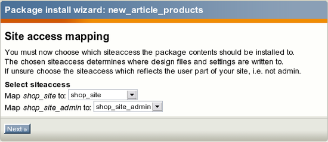
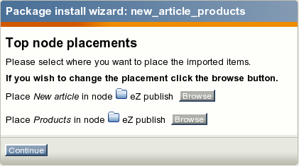

Go to "Setup - Packages" in your administration interface, select the internal repository containing the package you wish to install and click the "Change repository" button. Find the package you wish to install, click on its name and then click the "Install" button.
The system will display a list of items that will be created during the package installation (look at the next screenshot).
 Read this information carefully click the "Install package" button. Use the "Skip installation" to abort the operation.
Read this information carefully click the "Install package" button. Use the "Skip installation" to abort the operation.
The content object package installation wizard, step 1.
If the package contains not only actual content objects but also templates related to these objects, the system will ask which siteaccess these templates should be added to (look at the next screenshot).

Make your choice and click the "Next" button. The content object package installation wizard, step 2.
The next dialog reveals where the installed objects will be located and allow to choose another location if needed.

Choose the desired location and click the "Continue" button. The content object package installation wizard, step 3.
If some of the objects being installed already exist (i.e. there is another object with the same remote_id), the system will ask how this installation conflict should be handled (see the screenshot below).
 After clicking the "Continue" button, the system will install the package and display a summary.
After clicking the "Continue" button, the system will install the package and display a summary.
The content object package installation wizard, step 4.